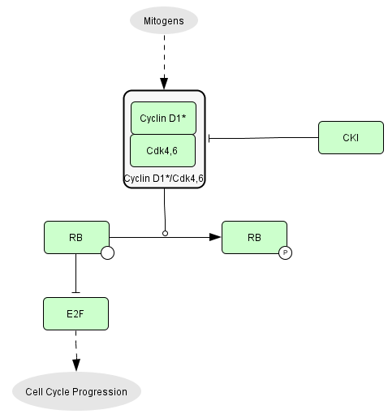

- Navigable map in real dimension
- Text-book view: Simple description of RB pathway
- RB and E2F: What links RB and E2F transcription factors
- Comprehensive map: Details of the consensus diagram that describes RB pathway
- RB Partners: List of all the proteins with which RB associate
- Case study: using the map to understand bladder cancer
Navigable map
We developed a fully interactive version of RB/E2F pathway.
The window is divided in two frames:
The left frame shows the map (where species and reactions are now clickable), and the right one gives useful information: the list of entities; the list of species in which the entity is involved; the list of reactions in which the species are involved; the module(s) to which the entity belongs; a link to GeneCards and Uniprot ids; when available, the Pubmed link of the publications in which a reaction has been found; and when appropriate, the other pathways in which the proteins participate (from MSigDB). In addition, the user can center the map on the selected species or reaction, switch the image to Cytoscape module view, show partial CellDesigner image corresponding to one particular module or a protein (show only the reactions in which the protein participates). All this information is clickable and cross-hyperlinked.
To access this information, click on a protein, a complex or a reaction.
To get the available details for all the catalyses, click on the reaction to which each catalysis points (and not on the catalysis arrow).
Text-book view
The usual picture of RB
regulation in text-books is over-simplified.

Growth factors activate CycD1/CDK4,6
complexes which phosphorylate RB that are keeping the transcription
factors E2F
inactive. E2F activity controls cell cycle progression.
RB and E2F
- RB1 (RB) is present in quiescent and proliferating cells. RB has
16 sites of phosphorylation.
- RBL1 (p107) is present in proliferating cells. p107 has 10 sites of
phosphorylation.
- RBL2 (p130) is present in quiescent cells. p130 has 22 sites of
phosphorylation.
- E2F transcription factors
Activator of transcription: E2F1, E2F2, E2F3a
Inhibitors of transcription: E2F3b, E2F4, E2F5, E2F6, E2F7a,
E2F7b, E2F8
The E2F transcription factors are active as dimers.
- E2F1 to E2F6 bind a dimerization partner protein: DP1 or DP2
- E2F7 and E2F8 are active as homodimers
- Association between pocket proteins and E2F Transcription
Factors
E2F1 to E2F3 bind RB
E2F4 bind RB, p107 or p130
E2F5 bind p130 (and to some extent p107)
E2F6 bind proteins from the polycomb group
E2F7 et E2F8 form homodimers and do not bind to other known proteins
Comprehensive Map
A map of molecular interactions has been constructed from published papers and describes the different mechanisms involved in the regulation of RB protein. The lower panel of the map concentrates on post-transcriptional events and the upper panel corresponds to the map of E2F gene targets. The different pieces of information about partners of RB and their interactions have been integrated into a comprehensive network. The building of the map is based on our understanding of the scientific publications and, at this point, may not be completely exhaustive. It is an attempt to describe as accurately as possible the mechanisms involved in the entry into the cell cycle.
Here is a version in real dimensions of the comprehensive map (with E2F target genes) [Comprehensive Map] and a version of the protein-protein interaction map only [Protein_Map]. The corresponding XML file can be found here: [CellDesigner file]
The pathway: general organization
We used Systems Biology Graphical Notation system to represent proteins and their specific modifications, protein complexes and genes, as well as various protein transformations (binding, unbinding, phosphorylation, acetylation, transport, etc.) and their effects of activation or inhibition of chemical reactions, including transcriptional activation or inhibition.
Ithe diagram is organized as follows: three different cellular compartments: nucleus, nucleolus, cytoplasm (lower panel of the comprehensive map) and a part representing the set of genes regulated by the E2F family of transcription factors (upper panel of the comprehensive map).
We compiled all the experimental data into a diagram using CellDesigner software, the pathway information was translated into BioPAX format for distribution using BiNoM Cytoscape plug-in.
Statistics:
The resulting map has a total of:
- 4 compartments: nucleus, nucleolus, cell, "DNA"
-
78 proteins,
-
215 distinct chemical species (163 from them are located in the nucleus, 49 in the cytoplasm, 3 in the nucleolus),
- 530 reactions (among them, 54 protein associations, 13 protein dissociations, 68 post-translational modifications, 364 transcriptional regulations and 27 transports pseudo-reactions),
-
176 genes,
The pathway is based on our understanding of more than 350 publications.
Lists of proteins, reactions, species...
You can find:
-
a list of genes [list_genes], with details of which genes are transcribed by each member of the E2F family transcription factors [GENES.xls]
-
a list of species here [list_species],
-
a list of proteins here [list_proteins],
-
a list of correspondance with HUGO names [list_HUGO]